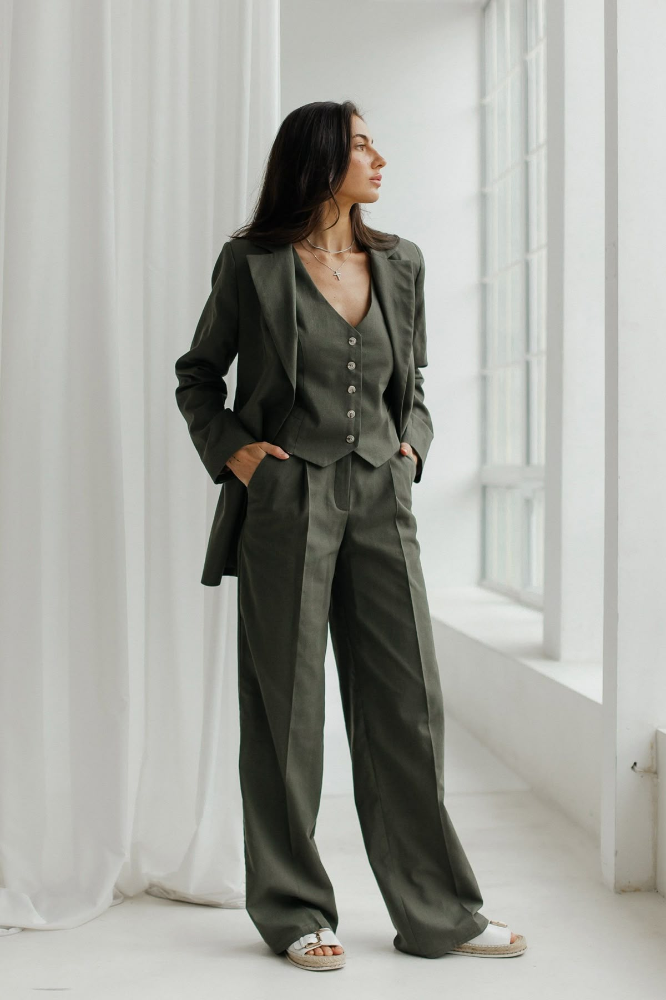

#Citrus
#Neroli
#Fresh
#Summer
#Luxury
Neroli Portofino, “Mediterranean breeze bottled in glass.”
Top
-
Bergamot, Mandarin, Lavender
Middle
-
Neroli, Jasmine, Orange Blossom
Base
-
Amber, White Musk
| Sophisticated | Warm Woods | Androgynous |
Blue water, white linen
— a Mediterranean flash of light.
Fashion Styling.
Tom Ford knows how to make summer sophistication feel effortless.

White linen set + tanned skin glow & Blue linen jacket and relaxed fit